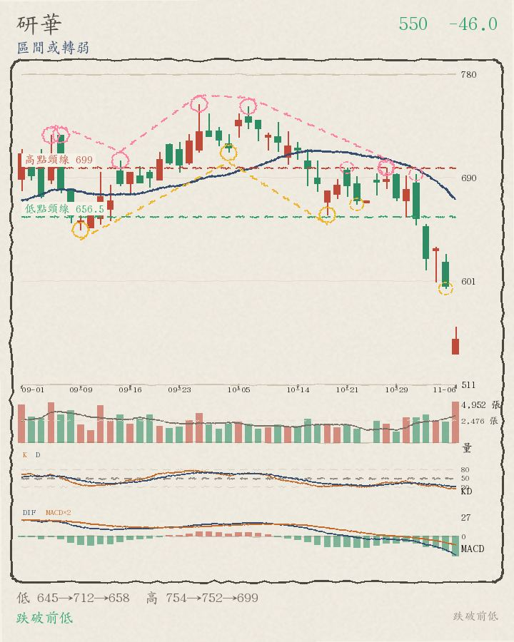

← 回股市觀察
盤中觀察 每日盤中觀察
2026/11/06 11:31 即時快照 · 當日盤中成交金額前 50 檔（上市 35＋上櫃 15）· 公開資料整理
→ 看當日逐檔技術線型分析（全檔） 歷次逐檔分析
39,610.00
加權指數 -1,964.72 點（-4.73%）
這是盤中快照，不是收盤結果。資料時間 2026-11-06 11:31:16（TWSE MIS 即時行情，上市／上櫃皆 delay=0）。
13:30 收盤（含最後一盤集合競價）會再變動；量能是以「已過交易時間比例」推估（尾盤大量時會低估）；
技術面標籤是把盤中現價代入原本以收盤價設計的規則（日線歷史只到前一交易日 9/14）。
統計範圍：候選池＝20261105 與 20261104 收盤成交值前段（上市 250／上櫃 130）取聯集，共 406 檔；再以今日盤中累計成交金額排序取
上市前 35＋上櫃前 15。漲跌家數是候選池內的數字，不是全市場（即時全市場家數證交所沒有開放端點）。
本頁為公開資料的整理與觀察，不構成投資建議，不報牌、不預測、不下買賣決策。
時程紀錄（本日盤中分析）▾ 點擊展開▴ 點擊收合
| 階段 | 時間 |
|---|
| 任務開始 | 由 Richard 提出時開始（手動執行） |
| 分析腳本執行 | 11:30:25 → 11:31:16（51.1 秒） |
| 資料快照時間 | 2026-11-06 11:31:16（行情時間戳 11:30:58） |
| 本頁產出 | 見頁尾版本時間 |
逐階段 log：
| 11:30:25 | START 盤中分析開始 |
| 11:30:25 | ① 抓即時指數（tse_t00 / otc_o00） |
| 11:30:25 | ② 建立候選池（20261105 與 20261104 成交值前段，上市＋上櫃） |
| 11:30:25 | 候選池共 407 檔 |
| 11:30:25 | ③ 抓即時候選池行情 |
| 11:31:15 | 取得即時報價 406 檔 |
| 11:31:15 | 候選池漲跌：漲 19／跌 385／平盤 2（快照時間 11:30:58） |
| 11:31:15 | ④ 選出 70 檔（上市 50＋上櫃 20），門檻 15.18 億 |
| 11:31:15 | ⑤ 抓日線歷史並算技術面 |
| 11:31:16 | ⑥ 產出（70 檔） |
K 線圖怎麼看：每一檔都附 K 線圖 —— 黃圈是轉折低點、粉圈是轉折高點（
虛線圈代表還沒確認的轉折）、藍線是月線（20 日均線）；頸線取最近兩個轉折低點之間的最高轉折高點，
突破頸線才會標示。
圖上另有兩條水平虛線、左側標數值：高點頸線（紅，最近兩個轉折低點之間的最高轉折高點）與低點頸線（綠，最近兩個轉折高點之間的最低轉折低點）；樣本不足就不畫。
紅色 K 棒＝收盤高於開盤、綠色＝收盤低於開盤。
大盤趨勢快篩（加權指數）（盤中近似） 資料日 2026/11/05・來源：證交所公開資料
主狀態：跌破頸線（M 頭成立）
前一交易日對照（11/04）：跌破頸線（M 頭成立）（量比 20 1.20） → 今日跌破頸線（M 頭成立）（量比 20 1.02）
指標、數值、判定（點開看 12 項明細：均線位置／排列、月線方向、頸線、轉折結構、位階、量價…）
加權指數11/5 收盤跌 1,374.19 點（-3.20%），收 41,574.72、跌破月線 46,640.00；月線還在下彎，MA5 這條短均還沒收復，離高點頸線 47,372.65 還差 12.24%。
- 均線位置：4 條均線站上 0 條；沒站上的是 MA5 43,592.63（收盤比它低 4.63%）、MA10 45,039.25（收盤比它低 7.69%）、MA20 46,640.00（收盤比它低 10.86%）、MA60 46,490.63（收盤比它低 10.57%）
- 月線方向：月線 MA20 現在 46,640.00，比 5 個交易日前低 1,207.51 點 → 下彎
- 量能：集中市場成交 9,871.0 億，跟 5 日均量差不多（1.01 倍）、跟 20 日均量差不多（1.02 倍）
- 關鍵價位：高點頸線 47,372.65，還差 12.24%；低點頸線 44,639.15已跌破
- 大小型股：加權 -3.20%、櫃買 -6.41%，兩邊同向

圖說：加權指數日 K（與個股圖相同標記）：黃圈＝轉折低點、粉圈＝轉折高點、虛線小圈＝還沒確認的轉折、藍線＝月線 MA20、水平虛線＝高點／低點頸線。最後一根是資料日當天。
本區塊為公開資料的技術面觀察，不構成投資建議，
不報牌、不預測、不下買賣決策。成交金額為集中市場總成交金額（含 ETF／權證），
與頁首摘要的「上市個股成交金額」口徑不同。標籤是統計，不是評分、也不是推薦。
上市 vs 上櫃（同期快篩）
加權 -3.20% vs 櫃買 -6.41%（同向） → 同向
（兩個市場分開寫，不合併成一個數字；櫃買為 TPEX 公開資料）
櫃買歷史：TPEX 逐日回補 130 根；來源：櫃買中心 www/zh-tw/indexInfo/sectinx（逐日，官方；OpenAPI tpex_index 只回當月）
（TPEX OpenAPI 只回當月，故逐日回補；歷史不足就不算該條均線並標「資料不足」，不用錯數字）
近 20 個交易日大盤狀態回溯（最新在上）（點開看逐日主狀態／量比／量價象限）
用同一支程式回算最近 20 個交易日（主狀態 S1~S8 與量比 20 皆為當日收盤當時的判定，
不是事後調整）；量比 20 未公布的日子寫「—」。
好條件最多的（前 10）
不好條件最多的（前 10）
好條件（7 項）：站上月線、月線向上、底底高、頭頭高、突破頸線、攻擊量（量增＋上漲）、守住今日高檔（距今日高點 1% 內）。
不好條件（7 項）：跌破前低、今日下跌、相對大盤弱、在月線之下、貼近今日低點（1% 內）、跌破昨日低點、月線下彎。
兩邊都是同一組日線資料＋盤中即時價算出來的「符合項目數」，只是把方向相反的條件分開數；
條件數不是評分或推薦，不構成投資建議。
逆勢上漲（加權下跌、個股上漲）（2 上市 1／上櫃 1）
盤中爆量（估量比 ≥ 1.5）（46 上市 37／上櫃 9）
跌破前低（線型轉弱）（66 上市 48／上櫃 18）
今日疲弱（跌幅前 10）（10 上市 5／上櫃 5）
逐檔（70 檔，依盤中成交金額排序）
台積電 2330 上市
2135 -105.0（-4.69%）
區間或轉弱 盤中成交值 1599.61 億・全榜第 1 名（上市第 1 名）・相對大盤 +0.04
好條件 0/7：無
不好條件 5/7：跌破前低、今日下跌、在月線之下、跌破昨日低點、月線下彎

11:31 盤中 2135（-4.69%），比加權指數強 0.04 個百分點、跌破月線 2413.25，離高點頸線 2484.17 還差 14.1%，轉折還沒走出明顯方向。
- 月線位置：現價 2135 在月線 2413.25 之下（-11.5%）；5 日線 2299 也在月線之下（短均在下）；月線向下
- 量能：以已過交易時間推估，今天成交量約是 20 日均量的 4.92 倍（爆量），比 20 日均量大不少；下跌卻量增，量價背離
- 關鍵價位：已跌破前一個轉折低點；高點頸線 2484.17 還在現價上方 14.1%；前一交易日高點 2285（低於 6.6%）；今天盤中高點 2195（低於 2.7%）；今天盤中低點 2020（高於 5.7%）
- 轉折結構：低點 2350、2375、2375 與高點 2510、2590、2435 都沒有明顯遞增，屬於區間震盪或轉弱；還沒確認的轉折低點 11-04 2235、11-05 2235；還沒確認的轉折高點 10-22 2435、10-28 2430（圖上虛線小圈）
聯發科 2454 上市
3360 -100.0（-2.89%）
底部墊高、未過前高 盤中成交值 504.17 億・全榜第 2 名（上市第 2 名）・相對大盤 +1.84
好條件 1/7：底底高
不好條件 5/7：跌破前低、今日下跌、在月線之下、跌破昨日低點、月線下彎

11:31 盤中 3360（-2.89%），比加權指數強 1.84 個百分點、跌破月線 4152.75，離高點頸線 4275 還差 21.4%，底部還在墊高（但高點沒同步創高）。
- 月線位置：現價 3360 在月線 4152.75 之下（-19.1%）；5 日線 3747 也在月線之下（短均在下）；月線向下
- 量能：以已過交易時間推估，今天成交量約是 20 日均量的 3.17 倍（爆量），比 20 日均量大不少；下跌卻量增，量價背離
- 關鍵價位：已跌破前一個轉折低點；高點頸線 4275 還在現價上方 21.4%；前一交易日高點 3715（低於 9.6%）；今天盤中高點 3425（低於 1.9%）；今天盤中低點 3115（高於 7.9%）
- 轉折結構：低點 3655、4430、4875 墊高（底底高），但高點 5480、5165、4245 沒有同步創高；還沒確認的轉折低點 10-27 3910、11-05 3450；還沒確認的轉折高點 10-28 4245、11-02 4070（圖上虛線小圈）
台達電 2308 上市
1040 -90.0（-7.96%）
高點墊高、底部不穩 盤中成交值 212.94 億・全榜第 3 名（上市第 3 名）・相對大盤 -3.23
好條件 1/7：頭頭高
不好條件 6/7：跌破前低、今日下跌、相對大盤弱、在月線之下、跌破昨日低點、月線下彎

11:31 盤中 1040（-7.96%），比加權指數弱 3.23 個百分點、跌破月線 1576，離高點頸線 1877.5 還差 44.6%，高點還在墊高（但底部沒同步墊高）。
- 月線位置：現價 1040 在月線 1576 之下（-34.0%）；5 日線 1262 也在月線之下（短均在下）；月線向下
- 量能：以已過交易時間推估，今天成交量約是 20 日均量的 2.92 倍（爆量），比 20 日均量大不少；下跌卻量增，量價背離
- 關鍵價位：已跌破前一個轉折低點；高點頸線 1877.5 還在現價上方 44.6%；前一交易日高點 1190（低於 12.6%）；今天盤中高點 1065（低於 2.3%）；今天盤中低點 1020（高於 2.0%）
- 轉折結構：高點 1885、1965、2115 墊高（頭頭高），但低點 1725、1560、1810 沒有同步墊高；還沒確認的轉折低點 11-02 1255、11-05 1120；還沒確認的轉折高點 10-21 1660、10-28 1575（圖上虛線小圈）
創意 3443 上市
6070 -335.0（-5.23%）
區間或轉弱 盤中成交值 195.27 億・全榜第 4 名（上市第 4 名）・相對大盤 -0.50
好條件 0/7：無
不好條件 6/7：跌破前低、今日下跌、相對大盤弱、在月線之下、跌破昨日低點、月線下彎

11:31 盤中 6070（-5.23%），比加權指數弱 0.50 個百分點、跌破月線 7681.5，離高點頸線 8510 還差 28.7%，轉折還沒走出明顯方向。
- 月線位置：現價 6070 在月線 7681.5 之下（-21.0%）；5 日線 7047 也在月線之下（短均在下）；月線向下
- 量能：以已過交易時間推估，今天成交量約是 20 日均量的 3.08 倍（爆量），比 20 日均量大不少；下跌卻量增，量價背離
- 關鍵價位：已跌破前一個轉折低點；高點頸線 8510 還在現價上方 28.7%；前一交易日高點 6820（低於 11.0%）；今天盤中高點 6460（低於 6.0%）；今天盤中低點 5765（高於 5.3%）
- 轉折結構：低點 7730、7065、7200 與高點 8750、8490、8255 都沒有明顯遞增，屬於區間震盪或轉弱；還沒確認的轉折低點 10-27 7200、11-04 6390；還沒確認的轉折高點 10-21 8490、10-29 8255（圖上虛線小圈）
欣興 3037 上市
734 -66.0（-8.25%）
底部墊高、未過前高 盤中成交值 185.44 億・全榜第 5 名（上市第 5 名）・相對大盤 -3.52
好條件 1/7：底底高
不好條件 6/7：跌破前低、今日下跌、相對大盤弱、在月線之下、跌破昨日低點、月線下彎

11:31 盤中 734（-8.25%），比加權指數弱 3.52 個百分點、跌破月線 1079.05，離高點頸線 1167.5 還差 37.1%，底部還在墊高（但高點沒同步創高）。
- 月線位置：現價 734 在月線 1079.05 之下（-32.0%）；5 日線 915.2 也在月線之下（短均在下）；月線向下
- 量能：以已過交易時間推估，今天成交量約是 20 日均量的 2.49 倍（爆量），比 20 日均量大不少；下跌卻量增，量價背離
- 關鍵價位：已跌破前一個轉折低點；高點頸線 1167.5 還在現價上方 37.1%；前一交易日高點 858（低於 14.5%）；今天盤中高點 771（低於 4.8%）；今天盤中低點 720（高於 1.9%）
- 轉折結構：低點 873、932、1040 墊高（底底高），但高點 1200、1420、1180 沒有同步創高；還沒確認的轉折低點 10-27 1035、11-05 800；還沒確認的轉折高點 10-28 1145、11-02 1020（圖上虛線小圈）
南亞 1303 上市
239 -10.0（-4.02%）
區間或轉弱 盤中成交值 178.36 億・全榜第 6 名（上市第 6 名）・相對大盤 +0.71
好條件 1/7：月線向上
不好條件 4/7：跌破前低、今日下跌、在月線之下、跌破昨日低點

11:31 盤中 239（-4.02%），比加權指數強 0.71 個百分點、跌破月線 303.025，離高點頸線 323.38 還差 26.1%，轉折還沒走出明顯方向。
- 月線位置：現價 239 在月線 303.025 之下（-21.1%）；5 日線 278.7 也在月線之下（短均在下）；月線向上
- 量能：以已過交易時間推估，今天成交量約是 20 日均量的 1.30 倍（量增），比 20 日均量大不少；下跌卻量增，量價背離
- 關鍵價位：已跌破前一個轉折低點；高點頸線 323.38 還在現價上方 26.1%；前一交易日高點 269（低於 11.2%）；今天盤中高點 253.5（低於 5.7%）；今天盤中低點 224.5（高於 6.5%）
- 轉折結構：低點 223、223、295 與高點 350.5、325.5、325 都沒有明顯遞增，屬於區間震盪或轉弱；還沒確認的轉折低點 10-27 290.5、11-05 249；還沒確認的轉折高點 10-29 325、11-02 308（圖上虛線小圈）
台光電 2383 上市
3795 -305.0（-7.44%）
底部墊高、未過前高 盤中成交值 170.09 億・全榜第 7 名（上市第 7 名）・相對大盤 -2.71
好條件 1/7：底底高
不好條件 6/7：跌破前低、今日下跌、相對大盤弱、在月線之下、跌破昨日低點、月線下彎

11:31 盤中 3795（-7.44%），比加權指數弱 2.71 個百分點、跌破月線 5093.25，離高點頸線 5221.67 還差 27.3%，底部還在墊高（但高點沒同步創高）。
- 月線位置：現價 3795 在月線 5093.25 之下（-25.5%）；5 日線 4486 也在月線之下（短均在下）；月線向下
- 量能：以已過交易時間推估，今天成交量約是 20 日均量的 2.47 倍（爆量），比 20 日均量大不少；下跌卻量增，量價背離
- 關鍵價位：已跌破前一個轉折低點；高點頸線 5221.67 還在現價上方 27.3%；前一交易日高點 4335（低於 12.5%）；今天盤中高點 3920（低於 3.2%）；今天盤中低點 3690（高於 2.8%）
- 轉折結構：低點 4635、4855、4930 墊高（底底高），但高點 6325、5485、5295 沒有同步創高；還沒確認的轉折低點 10-27 4685、11-05 4100；還沒確認的轉折高點 10-29 5295、11-02 4835（圖上虛線小圈）
南亞科 2408 上市
341.5 -18.5（-5.14%）
區間或轉弱 盤中成交值 157.92 億・全榜第 8 名（上市第 8 名）・相對大盤 -0.41
好條件 0/7：無
不好條件 6/7：跌破前低、今日下跌、相對大盤弱、在月線之下、跌破昨日低點、月線下彎

11:31 盤中 341.5（-5.14%），比加權指數弱 0.41 個百分點、跌破月線 451.375，離高點頸線 536.67 還差 36.4%，轉折還沒走出明顯方向。
- 月線位置：現價 341.5 在月線 451.375 之下（-24.3%）；5 日線 416.3 也在月線之下（短均在下）；月線向下
- 量能：以已過交易時間推估，今天成交量約是 20 日均量的 1.74 倍（爆量），比 20 日均量大不少；下跌卻量增，量價背離
- 關鍵價位：已跌破前一個轉折低點；高點頸線 536.67 還在現價上方 36.4%；前一交易日高點 381（低於 10.4%）；今天盤中高點 356（低於 4.1%）；今天盤中低點 324（高於 5.4%）
- 轉折結構：低點 465.5、488、412 與高點 533、537、497.5 都沒有明顯遞增，屬於區間震盪或轉弱；還沒確認的轉折低點 10-22 412、11-05 360；還沒確認的轉折高點 10-21 444、10-29 497.5（圖上虛線小圈）
國巨* 2327 上市
366.5 -38.0（-9.39%）
區間或轉弱 盤中成交值 147.68 億・全榜第 9 名（上市第 9 名）・相對大盤 -4.66
好條件 0/7：無
不好條件 7/7：跌破前低、今日下跌、相對大盤弱、在月線之下、貼近今日低點（1% 內）、跌破昨日低點、月線下彎

11:31 盤中 366.5（-9.39%），比加權指數弱 4.66 個百分點、跌破月線 540.75，離高點頸線 554.5 還差 33.9%，轉折還沒走出明顯方向。
- 月線位置：現價 366.5 在月線 540.75 之下（-32.2%）；5 日線 461.4 也在月線之下（短均在下）；月線向下
- 量能：以已過交易時間推估，今天成交量約是 20 日均量的 1.72 倍（爆量），比 20 日均量大不少；下跌卻量增，量價背離
- 關鍵價位：已跌破前一個轉折低點；高點頸線 554.5 還在現價上方 33.9%；前一交易日高點 436.5（低於 16.0%）；今天盤中高點 382（低於 4.1%）；今天盤中低點 364.5（高於 0.5%）
- 轉折結構：低點 548、548、506 與高點 605、601、686 都沒有明顯遞增，屬於區間震盪或轉弱；還沒確認的轉折低點 10-27 507、11-05 404.5；還沒確認的轉折高點 10-21 559、10-28 550（圖上虛線小圈）
日月光投控 3711 上市
522 -50.0（-8.74%）
區間或轉弱 盤中成交值 146.06 億・全榜第 10 名（上市第 10 名）・相對大盤 -4.01
好條件 0/7：無
不好條件 6/7：跌破前低、今日下跌、相對大盤弱、在月線之下、跌破昨日低點、月線下彎

11:31 盤中 522（-8.74%），比加權指數弱 4.01 個百分點、跌破月線 678.85，離高點頸線 702.75 還差 25.7%，轉折還沒走出明顯方向。
- 月線位置：現價 522 在月線 678.85 之下（-23.1%）；5 日線 631.4 也在月線之下（短均在下）；月線向下
- 量能：以已過交易時間推估，今天成交量約是 20 日均量的 2.70 倍（爆量），比 20 日均量大不少；下跌卻量增，量價背離
- 關鍵價位：已跌破前一個轉折低點；高點頸線 702.75 還在現價上方 25.7%；前一交易日高點 606（低於 13.9%）；今天盤中高點 551（低於 5.3%）；今天盤中低點 515（高於 1.4%）
- 轉折結構：低點 678、715、639 與高點 765、699、709 都沒有明顯遞增，屬於區間震盪或轉弱；還沒確認的轉折低點 10-30 624、11-05 568；還沒確認的轉折高點 10-29 709、11-02 692（圖上虛線小圈）
鴻海 2317 上市
223 -12.0（-5.11%）
區間或轉弱 盤中成交值 141.26 億・全榜第 11 名（上市第 11 名）・相對大盤 -0.38
好條件 0/7：無
不好條件 6/7：跌破前低、今日下跌、相對大盤弱、在月線之下、跌破昨日低點、月線下彎

11:31 盤中 223（-5.11%），比加權指數弱 0.38 個百分點、跌破月線 244.85，離高點頸線 256.42 還差 13.0%，轉折還沒走出明顯方向。
- 月線位置：現價 223 在月線 244.85 之下（-8.9%）；5 日線 243.4 也在月線之下（短均在下）；月線向下
- 量能：以已過交易時間推估，今天成交量約是 20 日均量的 2.61 倍（爆量），比 20 日均量大不少；下跌卻量增，量價背離
- 關鍵價位：已跌破前一個轉折低點；高點頸線 256.42 還在現價上方 13.0%；前一交易日高點 241.5（低於 7.7%）；今天盤中高點 227.5（低於 2.0%）；今天盤中低點 212.5（高於 4.9%）
- 轉折結構：低點 243.5、247、237 與高點 257、266.5、253.5 都沒有明顯遞增，屬於區間震盪或轉弱；還沒確認的轉折低點 10-30 240、11-05 234；還沒確認的轉折高點 10-29 253.5、11-02 252（圖上虛線小圈）
聯電 2303 上市
91.7 -6.7（-6.81%）
底部墊高、未過前高 盤中成交值 137.93 億・全榜第 12 名（上市第 12 名）・相對大盤 -2.08
好條件 1/7：底底高
不好條件 6/7：跌破前低、今日下跌、相對大盤弱、在月線之下、跌破昨日低點、月線下彎

11:31 盤中 91.7（-6.81%），比加權指數弱 2.08 個百分點、跌破月線 126.17，離高點頸線 129.75 還差 29.3%，底部還在墊高（但高點沒同步創高）。
- 月線位置：現價 91.7 在月線 126.17 之下（-27.3%）；5 日線 105.68 也在月線之下（短均在下）；月線向下
- 量能：以已過交易時間推估，今天成交量約是 20 日均量的 1.82 倍（爆量），比 20 日均量大不少；下跌卻量增，量價背離
- 關鍵價位：已跌破前一個轉折低點；高點頸線 129.75 還在現價上方 29.3%；前一交易日高點 104.5（低於 12.2%）；今天盤中高點 94.6（低於 3.1%）；今天盤中低點 88.6（高於 3.5%）
- 轉折結構：低點 123、135、151.5 墊高（底底高），但高點 145.5、168.5、165 沒有同步創高；還沒確認的轉折低點 10-30 107、11-05 97.9；還沒確認的轉折高點 10-22 131、10-28 128.5（圖上虛線小圈）
大立光 3008 上市
4260 -265.0（-5.86%）
區間或轉弱 盤中成交值 104.5 億・全榜第 13 名（上市第 13 名）・相對大盤 -1.13
好條件 0/7：無
不好條件 6/7：跌破前低、今日下跌、相對大盤弱、在月線之下、跌破昨日低點、月線下彎

11:31 盤中 4260（-5.86%），比加權指數弱 1.13 個百分點、跌破月線 6114，離高點頸線 6410 還差 33.5%，轉折還沒走出明顯方向。
- 月線位置：現價 4260 在月線 6114 之下（-30.3%）；5 日線 5080 也在月線之下（短均在下）；月線向下
- 量能：以已過交易時間推估，今天成交量約是 20 日均量的 1.56 倍（爆量），比 20 日均量大不少；下跌卻量增，量價背離
- 關鍵價位：已跌破前一個轉折低點；高點頸線 6410 還在現價上方 33.5%；前一交易日高點 4905（低於 13.1%）；今天盤中高點 4365（低於 2.4%）；今天盤中低點 4075（高於 4.5%）
- 轉折結構：低點 5740、6355、5970 與高點 6750、7460、6370 都沒有明顯遞增，屬於區間震盪或轉弱；還沒確認的轉折低點 10-27 5960、11-05 4520；還沒確認的轉折高點 10-21 6450、10-28 6370（圖上虛線小圈）
富喬 1815 上櫃
117 -4.5（-3.70%）
底部墊高、未過前高 盤中成交值 93.1 億・全榜第 14 名（上櫃第 1 名）・相對大盤 +1.03
好條件 2/7：月線向上、底底高
不好條件 4/7：跌破前低、今日下跌、在月線之下、跌破昨日低點

11:31 盤中 117（-3.70%），比加權指數強 1.03 個百分點、跌破月線 136.5，離高點頸線 146.25 還差 20.0%，底部還在墊高（但高點沒同步創高）。
- 月線位置：現價 117 在月線 136.5 之下（-14.3%）；5 日線 130.6 也在月線之下（短均在下）；月線向上
- 量能：以已過交易時間推估，今天成交量約是 20 日均量的 1.25 倍（量增），比 20 日均量大不少；下跌卻量增，量價背離
- 關鍵價位：已跌破前一個轉折低點；高點頸線 146.25 還在現價上方 20.0%；前一交易日高點 132（低於 11.4%）；今天盤中高點 125.5（低於 6.8%）；今天盤中低點 109.5（高於 6.8%）
- 轉折結構：低點 111、113、124 墊高（底底高），但高點 129.5、161.5、149 沒有同步創高；還沒確認的轉折低點 11-02 122、11-05 121.5；還沒確認的轉折高點 11-02 139、11-04 143.5（圖上虛線小圈）
南電 8046 上市
875 -97.0（-9.98%）
底部墊高、未過前高 盤中成交值 84.26 億・全榜第 15 名（上市第 14 名）・相對大盤 -5.25
好條件 1/7：底底高
不好條件 6/7：跌破前低、今日下跌、相對大盤弱、在月線之下、跌破昨日低點、月線下彎

11:31 盤中 875（-9.98%），比加權指數弱 5.25 個百分點、跌破月線 1291.1，離高點頸線 1396.67 還差 37.4%，底部還在墊高（但高點沒同步創高）。
- 月線位置：現價 875 在月線 1291.1 之下（-32.2%）；5 日線 1099.4 也在月線之下（短均在下）；月線向下
- 量能：以已過交易時間推估，今天成交量約是 20 日均量的 2.08 倍（爆量），比 20 日均量大不少；下跌卻量增，量價背離
- 關鍵價位：已跌破前一個轉折低點；高點頸線 1396.67 還在現價上方 37.4%；前一交易日高點 1050（低於 16.7%）；今天盤中高點 902（低於 3.0%）；今天盤中低點 875（高於 0.0%）
- 轉折結構：低點 1010、1025、1050 墊高（底底高），但高點 1125、1560、1400 沒有同步創高；還沒確認的轉折低點 10-28 1235、11-05 972；還沒確認的轉折高點 10-27 1390、11-02 1220（圖上虛線小圈）
台燿 6274 上櫃
905 -100.0（-9.95%）
區間或轉弱 盤中成交值 79.02 億・全榜第 16 名（上櫃第 2 名）・相對大盤 -5.22
好條件 0/7：無
不好條件 6/7：跌破前低、今日下跌、相對大盤弱、在月線之下、跌破昨日低點、月線下彎

11:31 盤中 905（-9.95%），比加權指數弱 5.22 個百分點、跌破月線 1453.75，離高點頸線 1447.5 還差 37.5%，轉折還沒走出明顯方向。
- 月線位置：現價 905 在月線 1453.75 之下（-37.8%）；5 日線 1137 也在月線之下（短均在下）；月線向下
- 量能：以已過交易時間推估，今天成交量約是 20 日均量的 1.31 倍（量增），比 20 日均量大不少；下跌卻量增，量價背離
- 關鍵價位：已跌破前一個轉折低點；高點頸線 1447.5 還在現價上方 37.5%；前一交易日高點 1045（低於 13.4%）；今天盤中高點 928（低於 2.5%）；今天盤中低點 905（高於 0.0%）
- 轉折結構：低點 1395、1295、1275 與高點 1460、1835、1450 都沒有明顯遞增，屬於區間震盪或轉弱；還沒確認的轉折低點 10-27 1280、11-05 1005；還沒確認的轉折高點 10-27 1450、10-29 1450（圖上虛線小圈）
緯穎 6669 上市
1580 -70.0（-4.24%）
區間或轉弱 盤中成交值 76.2 億・全榜第 17 名（上市第 15 名）・相對大盤 +0.49
好條件 0/7：無
不好條件 5/7：跌破前低、今日下跌、在月線之下、跌破昨日低點、月線下彎

11:31 盤中 1580（-4.24%），比加權指數強 0.49 個百分點、跌破月線 1940.25，離高點頸線 2005 還差 21.2%，轉折還沒走出明顯方向。
- 月線位置：現價 1580 在月線 1940.25 之下（-18.6%）；5 日線 1767 也在月線之下（短均在下）；月線向下
- 量能：以已過交易時間推估，今天成交量約是 20 日均量的 1.87 倍（爆量），比 20 日均量大不少；下跌卻量增，量價背離
- 關鍵價位：已跌破前一個轉折低點；高點頸線 2005 還在現價上方 21.2%；前一交易日高點 1755（低於 10.0%）；今天盤中高點 1610（低於 1.9%）；今天盤中低點 1485（高於 6.4%）
- 轉折結構：低點 2075、2080、1795 與高點 2335、2020、1990 都沒有明顯遞增，屬於區間震盪或轉弱；還沒確認的轉折低點 11-02 1765、11-05 1640；還沒確認的轉折高點 10-28 1990、11-03 1840（圖上虛線小圈）
廣達 2382 上市
289.5 -10.5（-3.50%）
區間或轉弱 盤中成交值 74.91 億・全榜第 18 名（上市第 16 名）・相對大盤 +1.23
好條件 0/7：無
不好條件 5/7：跌破前低、今日下跌、在月線之下、跌破昨日低點、月線下彎

11:31 盤中 289.5（-3.50%），比加權指數強 1.23 個百分點、跌破月線 320，離高點頸線 325.75 還差 11.1%，轉折還沒走出明顯方向。
- 月線位置：現價 289.5 在月線 320 之下（-9.5%）；5 日線 310 也在月線之下（短均在下）；月線向下
- 量能：以已過交易時間推估，今天成交量約是 20 日均量的 4.08 倍（爆量），比 20 日均量大不少；下跌卻量增，量價背離
- 關鍵價位：已跌破前一個轉折低點；高點頸線 325.75 還在現價上方 11.1%；前一交易日高點 307（低於 5.7%）；今天盤中高點 294.5（低於 1.7%）；今天盤中低點 272（高於 6.4%）
- 轉折結構：低點 330、311、311 與高點 349、337.5、338 都沒有明顯遞增，屬於區間震盪或轉弱；還沒確認的轉折低點 10-30 308、11-05 298；還沒確認的轉折高點 10-27 338、11-02 323（圖上虛線小圈）
景碩 3189 上市
668 -72.0（-9.73%）
底部墊高、未過前高 盤中成交值 72.83 億・全榜第 19 名（上市第 17 名）・相對大盤 -5.00
好條件 1/7：底底高
不好條件 7/7：跌破前低、今日下跌、相對大盤弱、在月線之下、貼近今日低點（1% 內）、跌破昨日低點、月線下彎

11:31 盤中 668（-9.73%），比加權指數弱 5.00 個百分點、跌破月線 968.55，離高點頸線 1060 還差 37.0%，底部還在墊高（但高點沒同步創高）。
- 月線位置：現價 668 在月線 968.55 之下（-31.0%）；5 日線 844.6 也在月線之下（短均在下）；月線向下
- 量能：以已過交易時間推估，今天成交量約是 20 日均量的 1.34 倍（量增），比 20 日均量大不少；下跌卻量增，量價背離
- 關鍵價位：已跌破前一個轉折低點；高點頸線 1060 還在現價上方 37.0%；前一交易日高點 787（低於 15.1%）；今天盤中高點 704（低於 5.1%）；今天盤中低點 666（高於 0.3%）
- 轉折結構：低點 766、784、941 墊高（底底高），但高點 835、1150、1065 沒有同步創高；還沒確認的轉折低點 10-27 928、11-05 740；還沒確認的轉折高點 10-22 1065、10-27 1055（圖上虛線小圈）
臻鼎-KY 4958 上市
370.5 -23.5（-5.96%）
底部墊高、未過前高 盤中成交值 72.77 億・全榜第 20 名（上市第 18 名）・相對大盤 -1.23
好條件 1/7：底底高
不好條件 6/7：跌破前低、今日下跌、相對大盤弱、在月線之下、跌破昨日低點、月線下彎

11:31 盤中 370.5（-5.96%），比加權指數弱 1.23 個百分點、跌破月線 530.1，離高點頸線 502 還差 26.2%，底部還在墊高（但高點沒同步創高）。
- 月線位置：現價 370.5 在月線 530.1 之下（-30.1%）；5 日線 448.6 也在月線之下（短均在下）；月線向下
- 量能：以已過交易時間推估，今天成交量約是 20 日均量的 1.22 倍（量增），比 20 日均量大不少；下跌卻量增，量價背離
- 關鍵價位：已跌破前一個轉折低點；高點頸線 502 還在現價上方 26.2%；前一交易日高點 429.5（低於 13.7%）；今天盤中高點 383（低於 3.3%）；今天盤中低點 355（高於 4.4%）
- 轉折結構：低點 446.5、463.5、518 墊高（底底高），但高點 505、613、614 沒有同步創高；還沒確認的轉折低點 10-27 519、11-05 391.5；還沒確認的轉折高點 10-29 555、11-02 499（圖上虛線小圈）
健策 3653 上市
5225 -580.0（-9.99%）
區間或轉弱 盤中成交值 71.9 億・全榜第 21 名（上市第 19 名）・相對大盤 -5.26
好條件 0/7：無
不好條件 6/7：跌破前低、今日下跌、相對大盤弱、在月線之下、跌破昨日低點、月線下彎

11:31 盤中 5225（-9.99%），比加權指數弱 5.26 個百分點、跌破月線 6506.75，離高點頸線 6625 還差 21.1%，轉折還沒走出明顯方向。
- 月線位置：現價 5225 在月線 6506.75 之下（-19.7%）；5 日線 6185 也在月線之下（短均在下）；月線向下
- 量能：以已過交易時間推估，今天成交量約是 20 日均量的 1.65 倍（爆量），比 20 日均量大不少；下跌卻量增，量價背離
- 關鍵價位：已跌破前一個轉折低點；高點頸線 6625 還在現價上方 21.1%；前一交易日高點 6180（低於 15.5%）；今天盤中高點 5400（低於 3.2%）；今天盤中低點 5225（高於 0.0%）
- 轉折結構：低點 5210、6760、5710 與高點 7330、6985、6655 都沒有明顯遞增，屬於區間震盪或轉弱；還沒確認的轉折低點 10-30 5995、11-04 5800；還沒確認的轉折高點 10-29 6655、11-04 6595（圖上虛線小圈）
群創 3481 上市
36.15 -1.9（-4.87%）
區間或轉弱 盤中成交值 71.28 億・全榜第 22 名（上市第 20 名）・相對大盤 -0.14
好條件 0/7：無
不好條件 6/7：跌破前低、今日下跌、相對大盤弱、在月線之下、跌破昨日低點、月線下彎

11:31 盤中 36.15（-4.87%），比加權指數弱 0.14 個百分點、跌破月線 46.795，離高點頸線 49.12 還差 26.4%，轉折還沒走出明顯方向。
- 月線位置：現價 36.15 在月線 46.795 之下（-22.8%）；5 日線 41.44 也在月線之下（短均在下）；月線向下
- 量能：以已過交易時間推估，今天成交量約是 20 日均量的 3.14 倍（爆量），比 20 日均量大不少；下跌卻量增，量價背離
- 關鍵價位：已跌破前一個轉折低點；高點頸線 49.12 還在現價上方 26.4%；前一交易日高點 40.65（低於 11.1%）；今天盤中高點 37.15（低於 2.7%）；今天盤中低點 34.2（高於 5.7%）
- 轉折結構：低點 46.25、48.55、45.65 與高點 52.2、56.2、49.7 都沒有明顯遞增，屬於區間震盪或轉弱；還沒確認的轉折低點 10-27 46.25、11-05 37.85；還沒確認的轉折高點 10-29 48.7、11-02 45.35（圖上虛線小圈）
金像電 2368 上市
818 -50.0（-5.76%）
區間或轉弱 盤中成交值 70.72 億・全榜第 23 名（上市第 21 名）・相對大盤 -1.03
好條件 0/7：無
不好條件 6/7：跌破前低、今日下跌、相對大盤弱、在月線之下、跌破昨日低點、月線下彎

11:31 盤中 818（-5.76%），比加權指數弱 1.03 個百分點、跌破月線 1137.6，離高點頸線 1082.5 還差 24.4%，轉折還沒走出明顯方向。
- 月線位置：現價 818 在月線 1137.6 之下（-28.1%）；5 日線 976.4 也在月線之下（短均在下）；月線向下
- 量能：以已過交易時間推估，今天成交量約是 20 日均量的 1.38 倍（量增），比 20 日均量大不少；下跌卻量增，量價背離
- 關鍵價位：已跌破前一個轉折低點；高點頸線 1082.5 還在現價上方 24.4%；前一交易日高點 944（低於 13.3%）；今天盤中高點 844（低於 3.1%）；今天盤中低點 782（高於 4.6%）
- 轉折結構：低點 1030、950、1120 與高點 1310、1295、1190 都沒有明顯遞增，屬於區間震盪或轉弱；還沒確認的轉折低點 10-27 1055、11-05 868；還沒確認的轉折高點 10-29 1190、11-02 1080（圖上虛線小圈）
華邦電 2344 上市
119 -8.5（-6.67%）
區間或轉弱 盤中成交值 69.45 億・全榜第 24 名（上市第 22 名）・相對大盤 -1.94
好條件 0/7：無
不好條件 6/7：跌破前低、今日下跌、相對大盤弱、在月線之下、跌破昨日低點、月線下彎

11:31 盤中 119（-6.67%），比加權指數弱 1.94 個百分點、跌破月線 159.85，離高點頸線 181 還差 34.3%，轉折還沒走出明顯方向。
- 月線位置：現價 119 在月線 159.85 之下（-25.6%）；5 日線 148.3 也在月線之下（短均在下）；月線向下
- 量能：以已過交易時間推估，今天成交量約是 20 日均量的 1.60 倍（爆量），比 20 日均量大不少；下跌卻量增，量價背離
- 關鍵價位：已跌破前一個轉折低點；高點頸線 181 還在現價上方 34.3%；前一交易日高點 136（低於 12.5%）；今天盤中高點 123（低於 3.3%）；今天盤中低點 115（高於 3.5%）
- 轉折結構：低點 174、151、151 與高點 180.5、184、178.5 都沒有明顯遞增，屬於區間震盪或轉弱；還沒確認的轉折低點 10-22 154、11-05 127.5；還沒確認的轉折高點 10-21 161.5、10-29 178.5（圖上虛線小圈）
藥華藥 6446 上市
1255 +70.0（+5.91%）
高點墊高、底部不穩 盤中成交值 67.07 億・全榜第 25 名（上市第 23 名）・相對大盤 +10.64
好條件 5/7：站上月線、月線向上、頭頭高、突破頸線、攻擊量（量增＋上漲）
不好條件 0/7：無

11:31 盤中 1255（+5.91%），比加權指數強 10.64 個百分點、站上月線 1194.25，已突破高點頸線 1243，高點還在墊高（但底部沒同步墊高）。
- 月線位置：現價 1255 在月線 1194.25 之上（+5.1%）；5 日線 1208 也在月線之上（短均在上）；月線向上
- 量能：以已過交易時間推估，今天成交量約是 20 日均量的 5.10 倍（爆量），比 20 日均量大不少；上漲又量增，量價配合
- 關鍵價位：高點頸線 1243 已站上；前一交易日高點 1270（低於 1.2%）；今天盤中高點 1295（低於 3.1%）；今天盤中低點 1075（高於 16.7%）
- 轉折結構：高點 1235、1300、1255 墊高（頭頭高），但低點 1155、1155、1145 沒有同步墊高；還沒確認的轉折低點 10-30 1155、11-05 1185；還沒確認的轉折高點 10-29 1255、11-05 1270（圖上虛線小圈）
群聯 8299 上櫃
1480 -80.0（-5.13%）
區間或轉弱 盤中成交值 64.08 億・全榜第 26 名（上櫃第 3 名）・相對大盤 -0.40
好條件 0/7：無
不好條件 6/7：跌破前低、今日下跌、相對大盤弱、在月線之下、跌破昨日低點、月線下彎

11:31 盤中 1480（-5.13%），比加權指數弱 0.40 個百分點、跌破月線 1898.5，離高點頸線 1945 還差 23.9%，轉折還沒走出明顯方向。
- 月線位置：現價 1480 在月線 1898.5 之下（-22.0%）；5 日線 1753 也在月線之下（短均在下）；月線向下
- 量能：以已過交易時間推估，今天成交量約是 20 日均量的 2.91 倍（爆量），比 20 日均量大不少；下跌卻量增，量價背離
- 關鍵價位：已跌破前一個轉折低點；高點頸線 1945 還在現價上方 23.9%；前一交易日高點 1660（低於 10.8%）；今天盤中高點 1520（低於 2.6%）；今天盤中低點 1405（高於 5.3%）
- 轉折結構：低點 2080、1785、1865 與高點 2160、2350、2090 都沒有明顯遞增，屬於區間震盪或轉弱；還沒確認的轉折低點 10-27 1865、11-05 1550；還沒確認的轉折高點 10-22 1945、10-29 2090（圖上虛線小圈）
世芯-KY 3661 上市
2775 -185.0（-6.25%）
區間或轉弱 盤中成交值 62.27 億・全榜第 27 名（上市第 24 名）・相對大盤 -1.52
好條件 0/7：無
不好條件 6/7：跌破前低、今日下跌、相對大盤弱、在月線之下、跌破昨日低點、月線下彎

11:31 盤中 2775（-6.25%），比加權指數弱 1.52 個百分點、跌破月線 3672.25，離高點頸線 3870 還差 28.3%，轉折還沒走出明顯方向。
- 月線位置：現價 2775 在月線 3672.25 之下（-24.4%）；5 日線 3220 也在月線之下（短均在下）；月線向下
- 量能：以已過交易時間推估，今天成交量約是 20 日均量的 1.84 倍（爆量），比 20 日均量大不少；下跌卻量增，量價背離
- 關鍵價位：已跌破前一個轉折低點；高點頸線 3870 還在現價上方 28.3%；前一交易日高點 3150（低於 11.9%）；今天盤中高點 2860（低於 3.0%）；今天盤中低點 2665（高於 4.1%）
- 轉折結構：低點 2630、3585、3260 與高點 4490、3835、3825 都沒有明顯遞增，屬於區間震盪或轉弱；還沒確認的轉折低點 10-27 3455、11-05 2915；還沒確認的轉折高點 10-21 3835、10-28 3825（圖上虛線小圈）
力積電 6770 上市
52.1 -2.7（-4.93%）
區間或轉弱 盤中成交值 59.66 億・全榜第 28 名（上市第 25 名）・相對大盤 -0.20
好條件 0/7：無
不好條件 6/7：跌破前低、今日下跌、相對大盤弱、在月線之下、跌破昨日低點、月線下彎

11:31 盤中 52.1（-4.93%），比加權指數弱 0.20 個百分點、跌破月線 66.655，離高點頸線 74.17 還差 29.8%，轉折還沒走出明顯方向。
- 月線位置：現價 52.1 在月線 66.655 之下（-21.8%）；5 日線 61.26 也在月線之下（短均在下）；月線向下
- 量能：以已過交易時間推估，今天成交量約是 20 日均量的 1.93 倍（爆量），比 20 日均量大不少；下跌卻量增，量價背離
- 關鍵價位：已跌破前一個轉折低點；高點頸線 74.17 還在現價上方 29.8%；前一交易日高點 58.4（低於 10.8%）；今天盤中高點 54.3（低於 4.1%）；今天盤中低點 49.35（高於 5.6%）
- 轉折結構：低點 66.7、70.5、63 與高點 74.7、78.1、73 都沒有明顯遞增，屬於區間震盪或轉弱；還沒確認的轉折低點 10-23 66.4、11-05 54.7；還沒確認的轉折高點 10-22 69.9、10-29 73（圖上虛線小圈）
友達 2409 上市
26.2 -1.1（-3.85%）
底部墊高、未過前高 盤中成交值 57.69 億・全榜第 29 名（上市第 26 名）・相對大盤 +0.88
好條件 1/7：底底高
不好條件 5/7：跌破前低、今日下跌、在月線之下、跌破昨日低點、月線下彎

11:31 盤中 26.2（-3.85%），比加權指數強 0.88 個百分點、跌破月線 34.07，離高點頸線 37.06 還差 29.3%，底部還在墊高（但高點沒同步創高）。
- 月線位置：現價 26.2 在月線 34.07 之下（-23.1%）；5 日線 29.31 也在月線之下（短均在下）；月線向下
- 量能：以已過交易時間推估，今天成交量約是 20 日均量的 1.27 倍（量增），比 20 日均量大不少；下跌卻量增，量價背離
- 關鍵價位：已跌破前一個轉折低點；高點頸線 37.06 還在現價上方 29.3%；前一交易日高點 28.8（低於 9.0%）；今天盤中高點 27.2（低於 3.7%）；今天盤中低點 24.55（高於 6.7%）
- 轉折結構：低點 27.75、33.75、34.45 墊高（底底高），但高點 43.55、37.8、36.65 沒有同步創高；還沒確認的轉折低點 10-27 33.45、11-05 27.1；還沒確認的轉折高點 10-27 36.55、10-29 36.65（圖上虛線小圈）
穩懋 3105 上櫃
406 -45.0（-9.98%）
區間或轉弱 盤中成交值 55.78 億・全榜第 30 名（上櫃第 4 名）・相對大盤 -5.25
好條件 0/7：無
不好條件 6/7：跌破前低、今日下跌、相對大盤弱、在月線之下、跌破昨日低點、月線下彎

11:31 盤中 406（-9.98%），比加權指數弱 5.25 個百分點、跌破月線 528.95，離高點頸線 595 還差 31.8%，轉折還沒走出明顯方向。
- 月線位置：現價 406 在月線 528.95 之下（-23.2%）；5 日線 529.6 也在月線之上（短均在上）；月線向下
- 量能：以已過交易時間推估，今天成交量約是 20 日均量的 1.05 倍（量平），比 20 日均量大一些
- 關鍵價位：已跌破前一個轉折低點；高點頸線 595 還在現價上方 31.8%；前一交易日高點 487（低於 16.6%）；今天盤中高點 417（低於 2.6%）；今天盤中低點 406（高於 0.0%）
- 轉折結構：低點 482、454、479 與高點 478、630、596 都沒有明顯遞增，屬於區間震盪或轉弱；還沒確認的轉折低點 10-30 541、11-05 451；還沒確認的轉折高點 10-29 594、11-02 596（圖上虛線小圈）
緯創 3231 上市
159 -9.5（-5.64%）
高點墊高、底部不穩 盤中成交值 54.22 億・全榜第 31 名（上市第 27 名）・相對大盤 -0.91
好條件 1/7：頭頭高
不好條件 6/7：跌破前低、今日下跌、相對大盤弱、在月線之下、跌破昨日低點、月線下彎

11:31 盤中 159（-5.64%），比加權指數弱 0.91 個百分點、跌破月線 184.95，離高點頸線 187.75 還差 15.3%，高點還在墊高（但底部沒同步墊高）。
- 月線位置：現價 159 在月線 184.95 之下（-14.0%）；5 日線 177.2 也在月線之下（短均在下）；月線向下
- 量能：以已過交易時間推估，今天成交量約是 20 日均量的 1.64 倍（爆量），比 20 日均量大不少；下跌卻量增，量價背離
- 關鍵價位：已跌破前一個轉折低點；高點頸線 187.75 還在現價上方 15.3%；前一交易日高點 175.5（低於 9.4%）；今天盤中高點 163（低於 2.5%）；今天盤中低點 152（高於 4.6%）
- 轉折結構：高點 190.5、194.5、199.5 墊高（頭頭高），但低點 178、182.5、173.5 沒有同步墊高；還沒確認的轉折低點 10-30 179.5、11-05 168；還沒確認的轉折高點 10-28 196、11-02 185（圖上虛線小圈）
京元電子 2449 上市
206 -22.5（-9.85%）
區間或轉弱 盤中成交值 50.41 億・全榜第 32 名（上市第 28 名）・相對大盤 -5.12
好條件 0/7：無
不好條件 6/7：跌破前低、今日下跌、相對大盤弱、在月線之下、跌破昨日低點、月線下彎

11:31 盤中 206（-9.85%），比加權指數弱 5.12 個百分點、跌破月線 272.075，離高點頸線 282.67 還差 27.1%，轉折還沒走出明顯方向。
- 月線位置：現價 206 在月線 272.075 之下（-24.3%）；5 日線 249.4 也在月線之下（短均在下）；月線向下
- 量能：以已過交易時間推估，今天成交量約是 20 日均量的 1.73 倍（爆量），比 20 日均量大不少；下跌卻量增，量價背離
- 關鍵價位：已跌破前一個轉折低點；高點頸線 282.67 還在現價上方 27.1%；前一交易日高點 245.5（低於 16.1%）；今天盤中高點 212.5（低於 3.1%）；今天盤中低點 206（高於 0.0%）
- 轉折結構：低點 253、284、255 與高點 330、310、284.5 都沒有明顯遞增，屬於區間震盪或轉弱；還沒確認的轉折低點 11-02 245.5、11-05 225；還沒確認的轉折高點 10-28 280、11-02 263（圖上虛線小圈）
貿聯-KY 3665 上市
1340 -130.0（-8.84%）
區間或轉弱 盤中成交值 50.21 億・全榜第 33 名（上市第 29 名）・相對大盤 -4.11
好條件 0/7：無
不好條件 6/7：跌破前低、今日下跌、相對大盤弱、在月線之下、跌破昨日低點、月線下彎

11:31 盤中 1340（-8.84%），比加權指數弱 4.11 個百分點、跌破月線 1913.5，離高點頸線 2367.5 還差 43.4%，轉折還沒走出明顯方向。
- 月線位置：現價 1340 在月線 1913.5 之下（-30.0%）；5 日線 1573 也在月線之下（短均在下）；月線向下
- 量能：以已過交易時間推估，今天成交量約是 20 日均量的 2.28 倍（爆量），比 20 日均量大不少；下跌卻量增，量價背離
- 關鍵價位：已跌破前一個轉折低點；高點頸線 2367.5 還在現價上方 43.4%；前一交易日高點 1560（低於 14.1%）；今天盤中高點 1370（低於 2.2%）；今天盤中低點 1325（高於 1.1%）
- 轉折結構：低點 2095、1930、1810 與高點 2375、2685、2080 都沒有明顯遞增，屬於區間震盪或轉弱；還沒確認的轉折低點 11-02 1555、11-05 1425；還沒確認的轉折高點 10-27 1890、11-03 1675（圖上虛線小圈）
聯亞 3081 上櫃
1745 -145.0（-7.67%）
區間或轉弱 盤中成交值 48.65 億・全榜第 34 名（上櫃第 5 名）・相對大盤 -2.94
好條件 0/7：無
不好條件 6/7：跌破前低、今日下跌、相對大盤弱、在月線之下、跌破昨日低點、月線下彎

11:31 盤中 1745（-7.67%），比加權指數弱 2.94 個百分點、跌破月線 2547.75，離高點頸線 2940 還差 40.6%，轉折還沒走出明顯方向。
- 月線位置：現價 1745 在月線 2547.75 之下（-31.5%）；5 日線 2190 也在月線之下（短均在下）；月線向下
- 量能：以已過交易時間推估，今天成交量約是 20 日均量的 1.49 倍（量增），比 20 日均量大不少；下跌卻量增，量價背離
- 關鍵價位：已跌破前一個轉折低點；高點頸線 2940 還在現價上方 40.6%；前一交易日高點 2045（低於 14.7%）；今天盤中高點 1795（低於 2.8%）；今天盤中低點 1705（高於 2.3%）
- 轉折結構：低點 2650、2585、2365 與高點 2950、3210、2795 都沒有明顯遞增，屬於區間震盪或轉弱；還沒確認的轉折低點 10-22 2365、11-05 1890；還沒確認的轉折高點 10-29 2795、11-02 2465（圖上虛線小圈）
智邦 2345 上市
1270 -110.0（-7.97%）
區間或轉弱 盤中成交值 47.49 億・全榜第 35 名（上市第 30 名）・相對大盤 -3.24
好條件 0/7：無
不好條件 6/7：跌破前低、今日下跌、相對大盤弱、在月線之下、跌破昨日低點、月線下彎

11:31 盤中 1270（-7.97%），比加權指數弱 3.24 個百分點、跌破月線 1824.5，轉折還沒走出明顯方向。
- 月線位置：現價 1270 在月線 1824.5 之下（-30.4%）；5 日線 1517 也在月線之下（短均在下）；月線向下
- 量能：以已過交易時間推估，今天成交量約是 20 日均量的 1.60 倍（爆量），比 20 日均量大不少；下跌卻量增，量價背離
- 關鍵價位：前一交易日高點 1470（低於 13.6%）；今天盤中高點 1295（低於 1.9%）；今天盤中低點 1245（高於 2.0%）
- 轉折結構：低點 1770、1970、1910 與高點 2145、2055、1875 都沒有明顯遞增，屬於區間震盪或轉弱；還沒確認的轉折低點 10-27 1740、11-05 1370；還沒確認的轉折高點 10-20 2055、10-29 1875（圖上虛線小圈）
富邦金 2881 上市
148 -7.5（-4.82%）
區間或轉弱 盤中成交值 45.75 億・全榜第 36 名（上市第 31 名）・相對大盤 -0.09
好條件 1/7：月線向上
不好條件 5/7：跌破前低、今日下跌、相對大盤弱、在月線之下、跌破昨日低點

11:31 盤中 148（-4.82%），比加權指數弱 0.09 個百分點、跌破月線 158.3，離高點頸線 162.5 還差 8.9%，轉折還沒走出明顯方向。
- 月線位置：現價 148 在月線 158.3 之下（-6.5%）；5 日線 157 也在月線之下（短均在下）；月線向上
- 量能：以已過交易時間推估，今天成交量約是 20 日均量的 3.11 倍（爆量），比 20 日均量大不少；下跌卻量增，量價背離
- 關鍵價位：已跌破前一個轉折低點；高點頸線 162.5 還在現價上方 8.9%；前一交易日高點 159.5（低於 7.2%）；今天盤中高點 151（低於 2.0%）；今天盤中低點 140（高於 5.7%）
- 轉折結構：低點 148、147.5、153.5 與高點 164.5、164、164 都沒有明顯遞增，屬於區間震盪或轉弱；還沒確認的轉折低點 10-30 158、11-04 152；還沒確認的轉折高點 11-02 163、11-05 159.5（圖上虛線小圈）
川湖 2059 上市
7545 -450.0（-5.63%）
區間或轉弱 盤中成交值 45.42 億・全榜第 37 名（上市第 32 名）・相對大盤 -0.90
好條件 0/7：無
不好條件 6/7：跌破前低、今日下跌、相對大盤弱、在月線之下、跌破昨日低點、月線下彎

11:31 盤中 7545（-5.63%），比加權指數弱 0.90 個百分點、跌破月線 9854，離高點頸線 10435 還差 27.7%，轉折還沒走出明顯方向。
- 月線位置：現價 7545 在月線 9854 之下（-23.4%）；5 日線 8981 也在月線之下（短均在下）；月線向下
- 量能：以已過交易時間推估，今天成交量約是 20 日均量的 1.67 倍（爆量），比 20 日均量大不少；下跌卻量增，量價背離
- 關鍵價位：已跌破前一個轉折低點；高點頸線 10435 還在現價上方 27.7%；前一交易日高點 8490（低於 11.1%）；今天盤中高點 7700（低於 2.0%）；今天盤中低點 7200（高於 4.8%）
- 轉折結構：低點 11665、11700、9500 與高點 13500、10580、10290 都沒有明顯遞增，屬於區間震盪或轉弱；還沒確認的轉折低點 10-27 9475、11-05 7825；還沒確認的轉折高點 10-28 10290、11-03 9850（圖上虛線小圈）
環球晶 6488 上櫃
510 -54.0（-9.57%）
區間或轉弱 盤中成交值 44.46 億・全榜第 38 名（上櫃第 6 名）・相對大盤 -4.84
好條件 0/7：無
不好條件 7/7：跌破前低、今日下跌、相對大盤弱、在月線之下、貼近今日低點（1% 內）、跌破昨日低點、月線下彎

11:31 盤中 510（-9.57%），比加權指數弱 4.84 個百分點、跌破月線 871.95，離高點頸線 1013.33 還差 49.7%，轉折還沒走出明顯方向。
- 月線位置：現價 510 在月線 871.95 之下（-41.5%）；5 日線 676.8 也在月線之下（短均在下）；月線向下
- 量能：以已過交易時間推估，今天成交量約是 20 日均量的 1.28 倍（量增），比 20 日均量大不少；下跌卻量增，量價背離
- 關鍵價位：已跌破前一個轉折低點；高點頸線 1013.33 還在現價上方 49.7%；前一交易日高點 619（低於 17.6%）；今天盤中高點 529（低於 3.6%）；今天盤中低點 508（高於 0.4%）
- 轉折結構：低點 931、875、872 與高點 1015、1010、1260 都沒有明顯遞增，屬於區間震盪或轉弱；還沒確認的轉折低點 10-27 807、11-05 558；還沒確認的轉折高點 10-21 903、10-28 860（圖上虛線小圈）
台玻 1802 上市
58.1 -2.0（-3.33%）
底部墊高、未過前高 盤中成交值 38.74 億・全榜第 39 名（上市第 33 名）・相對大盤 +1.40
好條件 2/7：月線向上、底底高
不好條件 4/7：跌破前低、今日下跌、在月線之下、跌破昨日低點

11:31 盤中 58.1（-3.33%），比加權指數強 1.40 個百分點、跌破月線 64.98，離高點頸線 69.67 還差 16.6%，底部還在墊高（但高點沒同步創高）。
- 月線位置：現價 58.1 在月線 64.98 之下（-10.6%）；5 日線 64.1 也在月線之下（短均在下）；月線向上
- 量能：以已過交易時間推估，今天成交量約是 20 日均量的 0.83 倍（量平），比 20 日均量少很多
- 關鍵價位：已跌破前一個轉折低點；高點頸線 69.67 還在現價上方 16.6%；前一交易日高點 65（低於 10.6%）；今天盤中高點 59.6（低於 2.5%）；今天盤中低點 54.1（高於 7.4%）
- 轉折結構：低點 56、56.6、58.8 墊高（底底高），但高點 61.7、61.7、73.6 沒有同步創高；還沒確認的轉折低點 10-30 58.8、11-05 60.1；還沒確認的轉折高點 10-28 68.4、11-03 70（圖上虛線小圈）
玉晶光 3406 上市
806 -40.0（-4.73%）
區間或轉弱 盤中成交值 37.63 億・全榜第 40 名（上市第 34 名）・相對大盤 +0.00
好條件 0/7：無
不好條件 5/7：跌破前低、今日下跌、在月線之下、跌破昨日低點、月線下彎

11:31 盤中 806（-4.73%），比加權指數強 0.00 個百分點、跌破月線 1089.05，離高點頸線 1330 還差 39.4%，轉折還沒走出明顯方向。
- 月線位置：現價 806 在月線 1089.05 之下（-26.0%）；5 日線 968.2 也在月線之下（短均在下）；月線向下
- 量能：以已過交易時間推估，今天成交量約是 20 日均量的 1.05 倍（量平），比 20 日均量大一些
- 關鍵價位：已跌破前一個轉折低點；高點頸線 1330 還在現價上方 39.4%；前一交易日高點 940（低於 14.3%）；今天盤中高點 836（低於 3.6%）；今天盤中低點 762（高於 5.8%）
- 轉折結構：低點 869、1010、1005 與高點 1220、1330、1330 都沒有明顯遞增，屬於區間震盪或轉弱；還沒確認的轉折低點 11-05 846；還沒確認的轉折高點 10-28 1330、10-29 1330（圖上虛線小圈）
金居 8358 上櫃
302.5 -31.5（-9.43%）
區間或轉弱 盤中成交值 37.35 億・全榜第 41 名（上櫃第 7 名）・相對大盤 -4.70
好條件 0/7：無
不好條件 7/7：跌破前低、今日下跌、相對大盤弱、在月線之下、貼近今日低點（1% 內）、跌破昨日低點、月線下彎

11:31 盤中 302.5（-9.43%），比加權指數弱 4.70 個百分點、跌破月線 453.25，離高點頸線 571 還差 47.0%，轉折還沒走出明顯方向。
- 月線位置：現價 302.5 在月線 453.25 之下（-33.3%）；5 日線 379.8 也在月線之下（短均在下）；月線向下
- 量能：以已過交易時間推估，今天成交量約是 20 日均量的 2.17 倍（爆量），比 20 日均量大不少；下跌卻量增，量價背離
- 關鍵價位：已跌破前一個轉折低點；高點頸線 571 還在現價上方 47.0%；前一交易日高點 370（低於 18.2%）；今天盤中高點 314（低於 3.7%）；今天盤中低點 301（高於 0.5%）
- 轉折結構：低點 469.5、477、399.5 與高點 535、578、510 都沒有明顯遞增，屬於區間震盪或轉弱；還沒確認的轉折低點 10-30 399.5、11-05 330.5；還沒確認的轉折高點 10-28 460、11-03 428（圖上虛線小圈）
鴻勁 7769 上市
3620 -360.0（-9.05%）
區間或轉弱 盤中成交值 37.07 億・全榜第 42 名（上市第 35 名）・相對大盤 -4.32
好條件 0/7：無
不好條件 7/7：跌破前低、今日下跌、相對大盤弱、在月線之下、貼近今日低點（1% 內）、跌破昨日低點、月線下彎

11:31 盤中 3620（-9.05%），比加權指數弱 4.32 個百分點、跌破月線 5279.5，離高點頸線 5543.33 還差 34.7%，轉折還沒走出明顯方向。
- 月線位置：現價 3620 在月線 5279.5 之下（-31.4%）；5 日線 4536 也在月線之下（短均在下）；月線向下
- 量能：以已過交易時間推估，今天成交量約是 20 日均量的 2.39 倍（爆量），比 20 日均量大不少；下跌卻量增，量價背離
- 關鍵價位：已跌破前一個轉折低點；高點頸線 5543.33 還在現價上方 34.7%；前一交易日高點 4275（低於 15.3%）；今天盤中高點 3705（低於 2.3%）；今天盤中低點 3585（高於 1.0%）
- 轉折結構：低點 5620、5380、5035 與高點 6615、6515、5610 都沒有明顯遞增，屬於區間震盪或轉弱；還沒確認的轉折低點 10-27 5070、11-05 3935；還沒確認的轉折高點 10-22 5480、10-29 5610（圖上虛線小圈）
台新新光金 2887 上市
38.5 -1.6（-3.99%）
底部墊高、未過前高 盤中成交值 35.29 億・全榜第 43 名（上市第 36 名）・相對大盤 +0.74
好條件 1/7：底底高
不好條件 5/7：跌破前低、今日下跌、在月線之下、跌破昨日低點、月線下彎

11:31 盤中 38.5（-3.99%），比加權指數強 0.74 個百分點、跌破月線 41.875，離高點頸線 43.44 還差 11.4%，底部還在墊高（但高點沒同步創高）。
- 月線位置：現價 38.5 在月線 41.875 之下（-8.1%）；5 日線 41.11 也在月線之下（短均在下）；月線向下
- 量能：以已過交易時間推估，今天成交量約是 20 日均量的 3.36 倍（爆量），比 20 日均量大不少；下跌卻量增，量價背離
- 關鍵價位：已跌破前一個轉折低點；高點頸線 43.44 還在現價上方 11.4%；前一交易日高點 41（低於 6.1%）；今天盤中高點 39（低於 1.3%）；今天盤中低點 36.3（高於 6.1%）
- 轉折結構：低點 35.7、40.1、40.9 墊高（底底高），但高點 44.8、43.5、42.9 沒有同步創高；還沒確認的轉折低點 10-30 41.4、11-04 39.2；還沒確認的轉折高點 10-29 42.9、11-05 41（圖上虛線小圈）
華通 2313 上市
158.5 -7.0（-4.23%）
上升趨勢（底底高＋頭頭高） 盤中成交值 35.04 億・全榜第 44 名（上市第 37 名）・相對大盤 +0.50
好條件 2/7：底底高、頭頭高
不好條件 5/7：跌破前低、今日下跌、在月線之下、跌破昨日低點、月線下彎

11:31 盤中 158.5（-4.23%），比加權指數強 0.50 個百分點、跌破月線 224.575，離高點頸線 232 還差 31.7%，轉折結構仍是底底高＋頭頭高。
- 月線位置：現價 158.5 在月線 224.575 之下（-29.4%）；5 日線 188.2 也在月線之下（短均在下）；月線向下
- 量能：以已過交易時間推估，今天成交量約是 20 日均量的 1.15 倍（量增），比 20 日均量大不少；下跌卻量增，量價背離
- 關鍵價位：已跌破前一個轉折低點；高點頸線 232 還在現價上方 31.7%；前一交易日高點 179（低於 11.5%）；今天盤中高點 163.5（低於 3.1%）；今天盤中低點 149（高於 6.4%）
- 轉折結構：低點 213、219、228 一路墊高、高點 235、261、266 也一路墊高，是底底高＋頭頭高；還沒確認的轉折低點 10-27 215、11-05 165；還沒確認的轉折高點 10-27 229、11-02 209（圖上虛線小圈）
華新科 2492 上市
258 -23.5（-8.35%）
區間或轉弱 盤中成交值 34.77 億・全榜第 45 名（上市第 38 名）・相對大盤 -3.62
好條件 0/7：無
不好條件 6/7：跌破前低、今日下跌、相對大盤弱、在月線之下、跌破昨日低點、月線下彎

11:31 盤中 258（-8.35%），比加權指數弱 3.62 個百分點、跌破月線 380.175，離高點頸線 428.33 還差 39.8%，轉折還沒走出明顯方向。
- 月線位置：現價 258 在月線 380.175 之下（-32.1%）；5 日線 330.2 也在月線之下（短均在下）；月線向下
- 量能：以已過交易時間推估，今天成交量約是 20 日均量的 0.79 倍（量平），比 20 日均量少很多
- 關鍵價位：已跌破前一個轉折低點；高點頸線 428.33 還在現價上方 39.8%；前一交易日高點 306.5（低於 15.8%）；今天盤中高點 270（低於 4.4%）；今天盤中低點 253.5（高於 1.8%）
- 轉折結構：低點 298.5、376.5、355.5 與高點 431.5、422、431.5 都沒有明顯遞增，屬於區間震盪或轉弱；還沒確認的轉折低點 10-22 365、11-05 281；還沒確認的轉折高點 10-22 422、10-29 431.5（圖上虛線小圈）
國泰金 2882 上市
106.5 -5.5（-4.91%）
區間或轉弱 盤中成交值 34.2 億・全榜第 46 名（上市第 39 名）・相對大盤 -0.18
好條件 1/7：月線向上
不好條件 5/7：跌破前低、今日下跌、相對大盤弱、在月線之下、跌破昨日低點

11:31 盤中 106.5（-4.91%），比加權指數弱 0.18 個百分點、跌破月線 113.675，離高點頸線 116.25 還差 8.4%，轉折還沒走出明顯方向。
- 月線位置：現價 106.5 在月線 113.675 之下（-6.3%）；5 日線 113.6 也在月線之下（短均在下）；月線向上
- 量能：以已過交易時間推估，今天成交量約是 20 日均量的 2.51 倍（爆量），比 20 日均量大不少；下跌卻量增，量價背離
- 關鍵價位：已跌破前一個轉折低點；高點頸線 116.25 還在現價上方 8.4%；前一交易日高點 115（低於 7.4%）；今天盤中高點 108（低於 1.4%）；今天盤中低點 101（高於 5.4%）
- 轉折結構：低點 110、110、110 與高點 118、117.5、117.5 都沒有明顯遞增，屬於區間震盪或轉弱；還沒確認的轉折低點 10-30 113、11-04 110；還沒確認的轉折高點 11-02 117.5、11-05 115（圖上虛線小圈）
奇鋐 3017 上市
2310 -255.0（-9.94%）
區間或轉弱 盤中成交值 33.66 億・全榜第 47 名（上市第 40 名）・相對大盤 -5.21
好條件 0/7：無
不好條件 6/7：跌破前低、今日下跌、相對大盤弱、在月線之下、跌破昨日低點、月線下彎

11:31 盤中 2310（-9.94%），比加權指數弱 5.21 個百分點、跌破月線 3173，離高點頸線 3390 還差 31.9%，轉折還沒走出明顯方向。
- 月線位置：現價 2310 在月線 3173 之下（-27.2%）；5 日線 2895 也在月線之下（短均在下）；月線向下
- 量能：以已過交易時間推估，今天成交量約是 20 日均量的 0.92 倍（量平），比 20 日均量少一些
- 關鍵價位：已跌破前一個轉折低點；高點頸線 3390 還在現價上方 31.9%；前一交易日高點 2760（低於 16.3%）；今天盤中高點 2310（高於 0.0%）；今天盤中低點 2310（高於 0.0%）
- 轉折結構：低點 3100、3285、3050 與高點 3600、3700、3450 都沒有明顯遞增，屬於區間震盪或轉弱；還沒確認的轉折低點 10-30 2885、11-05 2545；還沒確認的轉折高點 10-28 3330、11-03 3115（圖上虛線小圈）
旺宏 2337 上市
75.3 -4.4（-5.52%）
區間或轉弱 盤中成交值 33.29 億・全榜第 48 名（上市第 41 名）・相對大盤 -0.79
好條件 0/7：無
不好條件 6/7：跌破前低、今日下跌、相對大盤弱、在月線之下、跌破昨日低點、月線下彎

11:31 盤中 75.3（-5.52%），比加權指數弱 0.79 個百分點、跌破月線 101.74，離高點頸線 106 還差 29.0%，轉折還沒走出明顯方向。
- 月線位置：現價 75.3 在月線 101.74 之下（-26.0%）；5 日線 89.36 也在月線之下（短均在下）；月線向下
- 量能：以已過交易時間推估，今天成交量約是 20 日均量的 2.08 倍（爆量），比 20 日均量大不少；下跌卻量增，量價背離
- 關鍵價位：已跌破前一個轉折低點；高點頸線 106 還在現價上方 29.0%；前一交易日高點 85.2（低於 11.6%）；今天盤中高點 78.1（低於 3.6%）；今天盤中低點 71.8（高於 4.9%）
- 轉折結構：低點 114、114.5、99.2 與高點 124.5、123、107.5 都沒有明顯遞增，屬於區間震盪或轉弱；還沒確認的轉折低點 10-30 93.2、11-05 79.3；還沒確認的轉折高點 10-21 104.5、10-28 107.5（圖上虛線小圈）
金山電 8042 上櫃
128 -3.5（-2.66%）
高點墊高、底部不穩 盤中成交值 32.22 億・全榜第 49 名（上櫃第 8 名）・相對大盤 +2.07
好條件 2/7：月線向上、頭頭高
不好條件 3/7：跌破前低、今日下跌、在月線之下

11:31 盤中 128（-2.66%），比加權指數強 2.07 個百分點、跌破月線 137.125，離高點頸線 142 還差 9.9%，高點還在墊高（但底部沒同步墊高）。
- 月線位置：現價 128 在月線 137.125 之下（-6.7%）；5 日線 128.6 也在月線之下（短均在下）；月線向上
- 量能：以已過交易時間推估，今天成交量約是 20 日均量的 2.59 倍（爆量），比 20 日均量大不少；下跌卻量增，量價背離
- 關鍵價位：已跌破前一個轉折低點；高點頸線 142 還在現價上方 9.9%；前一交易日高點 145（低於 11.7%）；今天盤中高點 139.5（低於 8.2%）；今天盤中低點 118.5（高於 8.0%）
- 轉折結構：高點 166、154.5、144.5 墊高（頭頭高），但低點 110、129、129.5 沒有同步墊高；還沒確認的轉折低點 10-29 131、11-04 120；還沒確認的轉折高點 11-03 137.5、11-05 145（圖上虛線小圈）
高力 8996 上市
1165 -125.0（-9.69%）
區間或轉弱 盤中成交值 31.51 億・全榜第 50 名（上市第 42 名）・相對大盤 -4.96
好條件 0/7：無
不好條件 6/7：跌破前低、今日下跌、相對大盤弱、在月線之下、跌破昨日低點、月線下彎

11:31 盤中 1165（-9.69%），比加權指數弱 4.96 個百分點、跌破月線 1551.75，離高點頸線 1626.67 還差 28.4%，轉折還沒走出明顯方向。
- 月線位置：現價 1165 在月線 1551.75 之下（-24.9%）；5 日線 1405 也在月線之下（短均在下）；月線向下
- 量能：以已過交易時間推估，今天成交量約是 20 日均量的 1.28 倍（量增），比 20 日均量大不少；下跌卻量增，量價背離
- 關鍵價位：已跌破前一個轉折低點；高點頸線 1626.67 還在現價上方 28.4%；前一交易日高點 1370（低於 15.0%）；今天盤中高點 1240（低於 6.0%）；今天盤中低點 1165（高於 0.0%）
- 轉折結構：低點 1200、1470、1455 與高點 1665、1800、1770 都沒有明顯遞增，屬於區間震盪或轉弱；還沒確認的轉折低點 10-27 1405、11-04 1275；還沒確認的轉折高點 10-29 1595、11-02 1535（圖上虛線小圈）
GIS-KY 6456 上市
80.8 -6.4（-7.34%）
區間或轉弱 盤中成交值 31.31 億・全榜第 51 名（上市第 43 名）・相對大盤 -2.61
好條件 0/7：無
不好條件 6/7：跌破前低、今日下跌、相對大盤弱、在月線之下、跌破昨日低點、月線下彎

11:31 盤中 80.8（-7.34%），比加權指數弱 2.61 個百分點、跌破月線 95.705，離高點頸線 97.2 還差 16.9%，轉折還沒走出明顯方向。
- 月線位置：現價 80.8 在月線 95.705 之下（-15.6%）；5 日線 92.12 也在月線之下（短均在下）；月線向下
- 量能：以已過交易時間推估，今天成交量約是 20 日均量的 2.17 倍（爆量），比 20 日均量大不少；下跌卻量增，量價背離
- 關鍵價位：已跌破前一個轉折低點；高點頸線 97.2 還在現價上方 16.9%；前一交易日高點 93.9（低於 14.0%）；今天盤中高點 86.7（低於 6.8%）；今天盤中低點 78.5（高於 2.9%）
- 轉折結構：低點 62.9、61.4、83.3 與高點 108、108、113.5 都沒有明顯遞增，屬於區間震盪或轉弱；還沒確認的轉折低點 11-02 87、11-04 82.2；還沒確認的轉折高點 11-02 99.5、11-04 96.4（圖上虛線小圈）
華碩 2357 上市
854 -13.0（-1.50%）
區間或轉弱 盤中成交值 30.28 億・全榜第 52 名（上市第 44 名）・相對大盤 +3.23
好條件 1/7：守住今日高檔（距今日高點 1% 內）
不好條件 4/7：跌破前低、今日下跌、在月線之下、月線下彎

11:31 盤中 854（-1.50%），比加權指數強 3.23 個百分點、跌破月線 953.4，離高點頸線 1001.8 還差 14.8%，轉折還沒走出明顯方向。
- 月線位置：現價 854 在月線 953.4 之下（-10.4%）；5 日線 890.2 也在月線之下（短均在下）；月線向下
- 量能：以已過交易時間推估，今天成交量約是 20 日均量的 2.41 倍（爆量），比 20 日均量大不少；下跌卻量增，量價背離
- 關鍵價位：已跌破前一個轉折低點；高點頸線 1001.8 還在現價上方 14.8%；前一交易日高點 891（低於 4.2%）；今天盤中高點 862（低於 0.9%）；今天盤中低點 790（高於 8.1%）
- 轉折結構：低點 946、946、946 與高點 1010、1005、1005 都沒有明顯遞增，屬於區間震盪或轉弱；還沒確認的轉折低點 10-30 879、11-05 853；還沒確認的轉折高點 10-28 989、11-02 925（圖上虛線小圈）
旺矽 6223 上櫃
3400 -325.0（-8.72%）
區間或轉弱 盤中成交值 29.65 億・全榜第 53 名（上櫃第 9 名）・相對大盤 -3.99
好條件 0/7：無
不好條件 6/7：跌破前低、今日下跌、相對大盤弱、在月線之下、跌破昨日低點、月線下彎

11:31 盤中 3400（-8.72%），比加權指數弱 3.99 個百分點、跌破月線 5027.25，離高點頸線 5230 還差 35.0%，轉折還沒走出明顯方向。
- 月線位置：現價 3400 在月線 5027.25 之下（-32.4%）；5 日線 4263 也在月線之下（短均在下）；月線向下
- 量能：以已過交易時間推估，今天成交量約是 20 日均量的 1.63 倍（爆量），比 20 日均量大不少；下跌卻量增，量價背離
- 關鍵價位：已跌破前一個轉折低點；高點頸線 5230 還在現價上方 35.0%；前一交易日高點 4085（低於 16.8%）；今天盤中高點 3500（低於 2.9%）；今天盤中低點 3355（高於 1.3%）
- 轉折結構：低點 5365、5090、4995 與高點 5860、6160、5150 都沒有明顯遞增，屬於區間震盪或轉弱；還沒確認的轉折低點 10-30 4390、11-05 3725；還沒確認的轉折高點 10-29 5150、11-02 4790（圖上虛線小圈）
長榮 2603 上市
245.5 -13.5（-5.21%）
上升趨勢（底底高＋頭頭高） 盤中成交值 29.52 億・全榜第 54 名（上市第 45 名）・相對大盤 -0.48
好條件 3/7：月線向上、底底高、頭頭高
不好條件 5/7：跌破前低、今日下跌、相對大盤弱、在月線之下、跌破昨日低點

11:31 盤中 245.5（-5.21%），比加權指數弱 0.48 個百分點、跌破月線 259.7，離高點頸線 269.38 還差 8.9%，轉折結構仍是底底高＋頭頭高。
- 月線位置：現價 245.5 在月線 259.7 之下（-5.5%）；5 日線 267.9 也在月線之上（短均在上）；月線向上
- 量能：以已過交易時間推估，今天成交量約是 20 日均量的 1.44 倍（量增），比 20 日均量大不少；下跌卻量增，量價背離
- 關鍵價位：已跌破前一個轉折低點；高點頸線 269.38 還在現價上方 8.9%；前一交易日高點 269.5（低於 8.9%）；今天盤中高點 249（低於 1.4%）；今天盤中低點 236.5（高於 3.8%）
- 轉折結構：低點 227、231、254 一路墊高、高點 244、270.5、274.5 也一路墊高，是底底高＋頭頭高；還沒確認的轉折低點 10-30 259、11-05 257；還沒確認的轉折高點 11-02 274.5、11-05 269.5（圖上虛線小圈）
台塑化 6505 上市
84.3 -3.6（-4.10%）
底部墊高、未過前高 盤中成交值 29.48 億・全榜第 55 名（上市第 46 名）・相對大盤 +0.63
好條件 1/7：底底高
不好條件 4/7：今日下跌、在月線之下、跌破昨日低點、月線下彎

11:31 盤中 84.3（-4.10%），比加權指數強 0.63 個百分點、跌破月線 106.64，離高點頸線 111.75 還差 24.6%，底部還在墊高（但高點沒同步創高）。
- 月線位置：現價 84.3 在月線 106.64 之下（-20.9%）；5 日線 96.34 也在月線之下（短均在下）；月線向下
- 量能：以已過交易時間推估，今天成交量約是 20 日均量的 1.42 倍（量增），比 20 日均量大不少；下跌卻量增，量價背離
- 關鍵價位：高點頸線 111.75 還沒突破，差 24.6%；前一交易日高點 96（低於 12.2%）；今天盤中高點 86.8（低於 2.9%）；今天盤中低點 79.2（高於 6.4%）
- 轉折結構：低點 65.4、68.6、80 墊高（底底高），但高點 90.6、89.8、129 沒有同步創高；還沒確認的轉折低點 11-03 94.3、11-05 87.9；還沒確認的轉折高點 10-27 109.5、11-02 104.5（圖上虛線小圈）
眾達-KY 4977 上市
161 -14.5（-8.26%）
高點墊高、底部不穩 盤中成交值 29.45 億・全榜第 56 名（上市第 47 名）・相對大盤 -3.53
好條件 2/7：月線向上、頭頭高
不好條件 5/7：跌破前低、今日下跌、相對大盤弱、在月線之下、跌破昨日低點

11:31 盤中 161（-8.26%），比加權指數弱 3.53 個百分點、跌破月線 177.375，離高點頸線 195.33 還差 17.6%，高點還在墊高（但底部沒同步墊高）。
- 月線位置：現價 161 在月線 177.375 之下（-9.2%）；5 日線 176.4 也在月線之下（短均在下）；月線向上
- 量能：以已過交易時間推估，今天成交量約是 20 日均量的 5.03 倍（爆量），比 20 日均量大不少；下跌卻量增，量價背離
- 關鍵價位：已跌破前一個轉折低點；高點頸線 195.33 還在現價上方 17.6%；前一交易日高點 192.5（低於 16.4%）；今天盤中高點 170（低於 5.3%）；今天盤中低點 159（高於 1.3%）
- 轉折結構：高點 180.5、195.5、198 墊高（頭頭高），但低點 165、165、165 沒有同步墊高；還沒確認的轉折低點 11-02 166、11-04 162；還沒確認的轉折高點 11-02 189、11-05 192.5（圖上虛線小圈）
光寶科 2301 上市
198 -13.5（-6.38%）
區間或轉弱 盤中成交值 29.14 億・全榜第 57 名（上市第 48 名）・相對大盤 -1.65
好條件 0/7：無
不好條件 6/7：跌破前低、今日下跌、相對大盤弱、在月線之下、跌破昨日低點、月線下彎

11:31 盤中 198（-6.38%），比加權指數弱 1.65 個百分點、跌破月線 259.65，離高點頸線 264.5 還差 25.1%，轉折還沒走出明顯方向。
- 月線位置：現價 198 在月線 259.65 之下（-23.7%）；5 日線 229.9 也在月線之下（短均在下）；月線向下
- 量能：以已過交易時間推估，今天成交量約是 20 日均量的 1.67 倍（爆量），比 20 日均量大不少；下跌卻量增，量價背離
- 關鍵價位：已跌破前一個轉折低點；高點頸線 264.5 還在現價上方 25.1%；前一交易日高點 221.5（低於 10.6%）；今天盤中高點 203.5（低於 2.7%）；今天盤中低點 190.5（高於 3.9%）
- 轉折結構：低點 278、278、254 與高點 328、299.5、304.5 都沒有明顯遞增，屬於區間震盪或轉弱；還沒確認的轉折低點 10-30 228、11-05 210；還沒確認的轉折高點 10-29 261.5、11-02 247（圖上虛線小圈）
天品 6199 上櫃
161 -6.0（-3.59%）
高點墊高、底部不穩 盤中成交值 28.81 億・全榜第 58 名（上櫃第 10 名）・相對大盤 +1.14
好條件 4/7：站上月線、月線向上、頭頭高、突破頸線
不好條件 2/7：今日下跌、跌破昨日低點

11:31 盤中 161（-3.59%），比加權指數強 1.14 個百分點、站上月線 151.275，已突破高點頸線 151.17，高點還在墊高（但底部沒同步墊高）。
- 月線位置：現價 161 在月線 151.275 之上（+6.4%）；5 日線 164 也在月線之上（短均在上）；月線向上
- 量能：以已過交易時間推估，今天成交量約是 20 日均量的 4.35 倍（爆量），比 20 日均量大不少；下跌卻量增，量價背離
- 關鍵價位：高點頸線 151.17 已站上；前一交易日高點 167.5（低於 3.9%）；今天盤中高點 171（低於 5.8%）；今天盤中低點 156（高於 3.2%）
- 轉折結構：高點 97.7、153.5、150 墊高（頭頭高），但低點 89.8、134.5、134.5 沒有同步墊高；還沒確認的轉折低點 10-20 134.5、10-22 147；還沒確認的轉折高點 10-22 150、11-05 167.5（圖上虛線小圈）
雙鴻 3324 上櫃
1055 -115.0（-9.83%）
區間或轉弱 盤中成交值 28.31 億・全榜第 59 名（上櫃第 11 名）・相對大盤 -5.10
好條件 0/7：無
不好條件 6/7：跌破前低、今日下跌、相對大盤弱、在月線之下、跌破昨日低點、月線下彎

11:31 盤中 1055（-9.83%），比加權指數弱 5.10 個百分點、跌破月線 1400.25，離高點頸線 1511.67 還差 30.2%，轉折還沒走出明顯方向。
- 月線位置：現價 1055 在月線 1400.25 之下（-24.7%）；5 日線 1303 也在月線之下（短均在下）；月線向下
- 量能：以已過交易時間推估，今天成交量約是 20 日均量的 1.27 倍（量增），比 20 日均量大不少；下跌卻量增，量價背離
- 關鍵價位：已跌破前一個轉折低點；高點頸線 1511.67 還在現價上方 30.2%；前一交易日高點 1240（低於 14.9%）；今天盤中高點 1080（低於 2.3%）；今天盤中低點 1055（高於 0.0%）
- 轉折結構：低點 1395、1320、1310 與高點 1750、1515、1515 都沒有明顯遞增，屬於區間震盪或轉弱；還沒確認的轉折低點 11-02 1280、11-05 1170；還沒確認的轉折高點 10-29 1515、11-03 1445（圖上虛線小圈）
騰輝電子-KY 6672 上市
448 -28.5（-5.98%）
上升趨勢（底底高＋頭頭高） 盤中成交值 27.43 億・全榜第 60 名（上市第 49 名）・相對大盤 -1.25
好條件 3/7：月線向上、底底高、頭頭高
不好條件 5/7：跌破前低、今日下跌、相對大盤弱、在月線之下、跌破昨日低點

11:31 盤中 448（-5.98%），比加權指數弱 1.25 個百分點、跌破月線 554.725，離高點頸線 613.33 還差 27.0%，轉折結構仍是底底高＋頭頭高。
- 月線位置：現價 448 在月線 554.725 之下（-19.2%）；5 日線 512.5 也在月線之下（短均在下）；月線向上
- 量能：以已過交易時間推估，今天成交量約是 20 日均量的 1.79 倍（爆量），比 20 日均量大不少；下跌卻量增，量價背離
- 關鍵價位：已跌破前一個轉折低點；高點頸線 613.33 還在現價上方 27.0%；前一交易日高點 510（低於 12.2%）；今天盤中高點 470（低於 4.7%）；今天盤中低點 429（高於 4.4%）
- 轉折結構：低點 261.5、285、532 一路墊高、高點 317.5、605、677 也一路墊高，是底底高＋頭頭高；還沒確認的轉折低點 11-03 493.5、11-05 476.5；還沒確認的轉折高點 10-29 617、11-04 552（圖上虛線小圈）
研華 2395 上市
550 -46.0（-7.72%）
區間或轉弱 盤中成交值 27.24 億・全榜第 61 名（上市第 50 名）・相對大盤 -2.99
好條件 0/7：無
不好條件 6/7：跌破前低、今日下跌、相對大盤弱、在月線之下、跌破昨日低點、月線下彎

11:31 盤中 550（-7.72%），比加權指數弱 2.99 個百分點、跌破月線 680.55，離高點頸線 699 還差 21.3%，轉折還沒走出明顯方向。
- 月線位置：現價 550 在月線 680.55 之下（-19.2%）；5 日線 636 也在月線之下（短均在下）；月線向下
- 量能：以已過交易時間推估，今天成交量約是 20 日均量的 3.98 倍（爆量），比 20 日均量大不少；下跌卻量增，量價背離
- 關鍵價位：已跌破前一個轉折低點；高點頸線 699 還在現價上方 21.3%；前一交易日高點 624（低於 11.9%）；今天盤中高點 561（低於 2.0%）；今天盤中低點 537（高於 2.4%）
- 轉折結構：低點 645、712、658 與高點 754、752、699 都沒有明顯遞增，屬於區間震盪或轉弱；還沒確認的轉折低點 10-22 667、11-05 594；還沒確認的轉折高點 10-28 699、11-02 693（圖上虛線小圈）
頎邦 6147 上櫃
143.5 -14.0（-8.89%）
區間或轉弱 盤中成交值 26.66 億・全榜第 62 名（上櫃第 12 名）・相對大盤 -4.16
好條件 0/7：無
不好條件 6/7：跌破前低、今日下跌、相對大盤弱、在月線之下、跌破昨日低點、月線下彎

11:31 盤中 143.5（-8.89%），比加權指數弱 4.16 個百分點、跌破月線 205.825，離高點頸線 220 還差 34.8%，轉折還沒走出明顯方向。
- 月線位置：現價 143.5 在月線 205.825 之下（-30.3%）；5 日線 178.5 也在月線之下（短均在下）；月線向下
- 量能：以已過交易時間推估，今天成交量約是 20 日均量的 1.13 倍（量增），比 20 日均量大一些；下跌卻量增，量價背離
- 關鍵價位：已跌破前一個轉折低點；高點頸線 220 還在現價上方 34.8%；前一交易日高點 171（低於 16.1%）；今天盤中高點 148（低於 3.0%）；今天盤中低點 142（高於 1.1%）
- 轉折結構：低點 208、211、194.5 與高點 238、217、223 都沒有明顯遞增，屬於區間震盪或轉弱；還沒確認的轉折低點 10-27 199.5、11-05 157.5；還沒確認的轉折高點 10-21 217、10-28 223（圖上虛線小圈）
信驊 5274 上櫃
11375 -1260.0（-9.97%）
區間或轉弱 盤中成交值 21.27 億・全榜第 63 名（上櫃第 13 名）・相對大盤 -5.24
好條件 0/7：無
不好條件 6/7：跌破前低、今日下跌、相對大盤弱、在月線之下、跌破昨日低點、月線下彎

11:31 盤中 11375（-9.97%），比加權指數弱 5.24 個百分點、跌破月線 16195.2，離高點頸線 17245 還差 34.0%，轉折還沒走出明顯方向。
- 月線位置：現價 11375 在月線 16195.2 之下（-29.8%）；5 日線 14599 也在月線之下（短均在下）；月線向下
- 量能：以已過交易時間推估，今天成交量約是 20 日均量的 0.91 倍（量平），比 20 日均量少一些
- 關鍵價位：已跌破前一個轉折低點；高點頸線 17245 還在現價上方 34.0%；前一交易日高點 13500（低於 15.7%）；今天盤中高點 11375（高於 0.0%）；今天盤中低點 11375（高於 0.0%）
- 轉折結構：低點 17170、15975、15500 與高點 19895、18465、17490 都沒有明顯遞增，屬於區間震盪或轉弱；還沒確認的轉折低點 10-27 15800、11-05 12635；還沒確認的轉折高點 10-22 17000、10-29 17490（圖上虛線小圈）
威剛 3260 上櫃
292.5 -7.0（-2.34%）
區間或轉弱 盤中成交值 19.93 億・全榜第 64 名（上櫃第 14 名）・相對大盤 +2.39
好條件 0/7：無
不好條件 5/7：跌破前低、今日下跌、在月線之下、跌破昨日低點、月線下彎

11:31 盤中 292.5（-2.34%），比加權指數強 2.39 個百分點、跌破月線 343.65，離高點頸線 382 還差 23.4%，轉折還沒走出明顯方向。
- 月線位置：現價 292.5 在月線 343.65 之下（-14.9%）；5 日線 324.5 也在月線之下（短均在下）；月線向下
- 量能：以已過交易時間推估，今天成交量約是 20 日均量的 2.04 倍（爆量），比 20 日均量大不少；下跌卻量增，量價背離
- 關鍵價位：已跌破前一個轉折低點；高點頸線 382 還在現價上方 23.4%；前一交易日高點 315（低於 7.1%）；今天盤中高點 304.5（低於 3.9%）；今天盤中低點 270（高於 8.3%）
- 轉折結構：低點 327、328、328 與高點 405.5、385.5、378.5 都沒有明顯遞增，屬於區間震盪或轉弱；還沒確認的轉折低點 10-27 328、11-05 296；還沒確認的轉折高點 10-29 378.5（圖上虛線小圈）
欣銓 3264 上櫃
163.5 -16.0（-8.91%）
區間或轉弱 盤中成交值 19.38 億・全榜第 65 名（上櫃第 15 名）・相對大盤 -4.18
好條件 0/7：無
不好條件 7/7：跌破前低、今日下跌、相對大盤弱、在月線之下、貼近今日低點（1% 內）、跌破昨日低點、月線下彎

11:31 盤中 163.5（-8.91%），比加權指數弱 4.18 個百分點、跌破月線 242.25，離高點頸線 256.5 還差 36.3%，轉折還沒走出明顯方向。
- 月線位置：現價 163.5 在月線 242.25 之下（-32.5%）；5 日線 201.7 也在月線之下（短均在下）；月線向下
- 量能：以已過交易時間推估，今天成交量約是 20 日均量的 1.10 倍（量增），比 20 日均量大一些；下跌卻量增，量價背離
- 關鍵價位：已跌破前一個轉折低點；高點頸線 256.5 還在現價上方 36.3%；前一交易日高點 192（低於 14.8%）；今天盤中高點 168.5（低於 3.0%）；今天盤中低點 162（高於 0.9%）
- 轉折結構：低點 238、238、241.5 與高點 289.5、291.5、279.5 都沒有明顯遞增，屬於區間震盪或轉弱；還沒確認的轉折低點 10-28 234.5、11-05 179；還沒確認的轉折高點 10-22 279.5、10-27 261.5（圖上虛線小圈）
世界 5347 上櫃
119 -7.0（-5.56%）
底部墊高、未過前高 盤中成交值 18.34 億・全榜第 66 名（上櫃第 16 名）・相對大盤 -0.83
好條件 1/7：底底高
不好條件 6/7：跌破前低、今日下跌、相對大盤弱、在月線之下、跌破昨日低點、月線下彎

11:31 盤中 119（-5.56%），比加權指數弱 0.83 個百分點、跌破月線 161.05，離高點頸線 170 還差 30.0%，底部還在墊高（但高點沒同步創高）。
- 月線位置：現價 119 在月線 161.05 之下（-26.1%）；5 日線 137.2 也在月線之下（短均在下）；月線向下
- 量能：以已過交易時間推估，今天成交量約是 20 日均量的 1.79 倍（爆量），比 20 日均量大不少；下跌卻量增，量價背離
- 關鍵價位：已跌破前一個轉折低點；高點頸線 170 還在現價上方 30.0%；前一交易日高點 134.5（低於 11.5%）；今天盤中高點 123（低於 3.3%）；今天盤中低點 113.5（高於 4.8%）
- 轉折結構：低點 147、152.5、159 墊高（底底高），但高點 170、170、170 沒有同步創高；還沒確認的轉折低點 10-30 141、11-05 126；還沒確認的轉折高點 10-22 170、10-28 170（圖上虛線小圈）
萬潤 6187 上櫃
864 -95.0（-9.91%）
區間或轉弱 盤中成交值 16.81 億・全榜第 67 名（上櫃第 17 名）・相對大盤 -5.18
好條件 0/7：無
不好條件 6/7：跌破前低、今日下跌、相對大盤弱、在月線之下、跌破昨日低點、月線下彎

11:31 盤中 864（-9.91%），比加權指數弱 5.18 個百分點、跌破月線 1331.45，離高點頸線 1432.5 還差 39.7%，轉折還沒走出明顯方向。
- 月線位置：現價 864 在月線 1331.45 之下（-35.1%）；5 日線 1097.8 也在月線之下（短均在下）；月線向下
- 量能：以已過交易時間推估，今天成交量約是 20 日均量的 1.26 倍（量增），比 20 日均量大不少；下跌卻量增，量價背離
- 關鍵價位：已跌破前一個轉折低點；高點頸線 1432.5 還在現價上方 39.7%；前一交易日高點 1040（低於 16.9%）；今天盤中高點 894（低於 3.4%）；今天盤中低點 864（高於 0.0%）
- 轉折結構：低點 1185、1180、1180 與高點 1270、1680、1360 都沒有明顯遞增，屬於區間震盪或轉弱；還沒確認的轉折低點 10-30 1135、11-05 959；還沒確認的轉折高點 10-28 1360、11-02 1210（圖上虛線小圈）
倉和 6538 上櫃
279.5 +7.0（+2.57%）
區間或轉弱 盤中成交值 15.58 億・全榜第 68 名（上櫃第 18 名）・相對大盤 +7.30
好條件 1/7：攻擊量（量增＋上漲）
不好條件 2/7：在月線之下、月線下彎

11:31 盤中 279.5（+2.57%），比加權指數強 7.30 個百分點、跌破月線 297.25，離高點頸線 307.17 還差 9.0%，轉折還沒走出明顯方向。
- 月線位置：現價 279.5 在月線 297.25 之下（-6.0%）；5 日線 272.5 也在月線之下（短均在下）；月線向下
- 量能：以已過交易時間推估，今天成交量約是 20 日均量的 3.37 倍（爆量），比 20 日均量大不少；上漲又量增，量價配合
- 關鍵價位：高點頸線 307.17 還沒突破，差 9.0%；前一交易日高點 302.5（低於 7.6%）；今天盤中高點 295（低於 5.3%）；今天盤中低點 245.5（高於 13.8%）
- 轉折結構：低點 272、264.5、270 與高點 468、334.5、344 都沒有明顯遞增，屬於區間震盪或轉弱；還沒確認的轉折低點 10-27 270、11-04 239.5；還沒確認的轉折高點 10-29 344、11-05 302.5（圖上虛線小圈）
宜鼎 5289 上櫃
908 -37.0（-3.92%）
區間或轉弱 盤中成交值 15.2 億・全榜第 69 名（上櫃第 19 名）・相對大盤 +0.81
好條件 0/7：無
不好條件 5/7：跌破前低、今日下跌、在月線之下、跌破昨日低點、月線下彎

11:31 盤中 908（-3.92%），比加權指數強 0.81 個百分點、跌破月線 1125.75，離高點頸線 1549.42 還差 41.4%，轉折還沒走出明顯方向。
- 月線位置：現價 908 在月線 1125.75 之下（-19.3%）；5 日線 1041 也在月線之下（短均在下）；月線向下
- 量能：以已過交易時間推估，今天成交量約是 20 日均量的 2.35 倍（爆量），比 20 日均量大不少；下跌卻量增，量價背離
- 關鍵價位：已跌破前一個轉折低點；高點頸線 1549.42 還在現價上方 41.4%；前一交易日高點 1010（低於 10.1%）；今天盤中高點 936（低於 3.0%）；今天盤中低點 851（高於 6.7%）
- 轉折結構：低點 1095、1065、1065 與高點 1535、1375、1205 都沒有明顯遞增，屬於區間震盪或轉弱；還沒確認的轉折低點 10-23 1065、11-05 943；還沒確認的轉折高點 10-20 1155、10-29 1205（圖上虛線小圈）
合晶 6182 上櫃
68.3 -6.4（-8.57%）
區間或轉弱 盤中成交值 15.18 億・全榜第 70 名（上櫃第 20 名）・相對大盤 -3.84
好條件 0/7：無
不好條件 6/7：跌破前低、今日下跌、相對大盤弱、在月線之下、跌破昨日低點、月線下彎

11:31 盤中 68.3（-8.57%），比加權指數弱 3.84 個百分點、跌破月線 105.715，離高點頸線 140 還差 51.2%，轉折還沒走出明顯方向。
- 月線位置：現價 68.3 在月線 105.715 之下（-35.4%）；5 日線 86.16 也在月線之下（短均在下）；月線向下
- 量能：以已過交易時間推估，今天成交量約是 20 日均量的 1.26 倍（量增），比 20 日均量大不少；下跌卻量增，量價背離
- 關鍵價位：已跌破前一個轉折低點；高點頸線 140 還在現價上方 51.2%；前一交易日高點 81.9（低於 16.6%）；今天盤中高點 71（低於 3.8%）；今天盤中低點 67.3（高於 1.5%）
- 轉折結構：低點 104、100、103.5 與高點 140、140、113 都沒有明顯遞增，屬於區間震盪或轉弱；還沒確認的轉折低點 10-27 100.5、11-05 74.6；還沒確認的轉折高點 10-22 113、10-27 107.5（圖上虛線小圈）